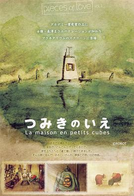

回忆积木小屋 / つみきのいえ
又名：积木之家 / Tsumiki no ie / La Maison en Petits Cubes / The House of Small Cubes
记性好其实不是什么开心事儿……
作品信息
| 导演 | 加藤久仁生 |
| 编剧 | 平田研也 |
| 类型 | 剧情 / 动画 / 短片 |
| 制片国家/地区 | 日本 |
| 语言 | 无对白 |
| 上映日期 | 2008-06-10(昂西动画节) |
| 片长 | 12分钟 |
| IMDb | tt1361566 |
最后一次看到是 2026-08-12T21:13:14+08:00 · 豆瓣原页